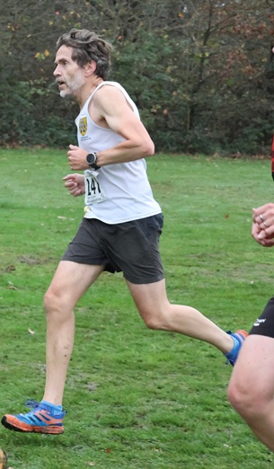
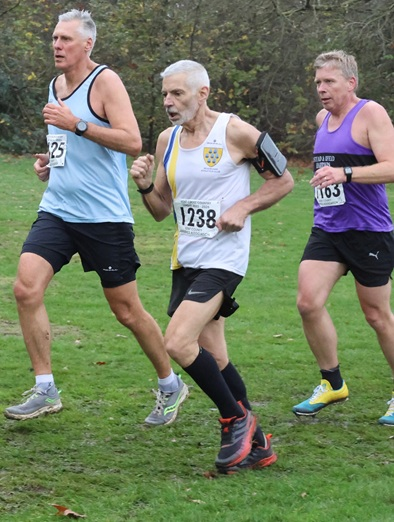
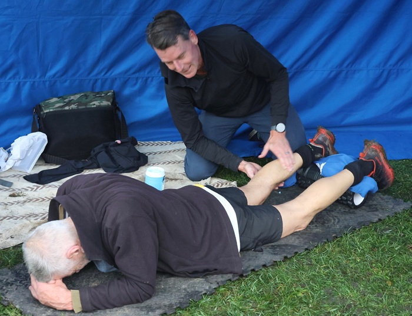

Just three SAC runners continued their challenge in the 2025-26 Kent cross-country league at Danson Park on 15th November. In the M50 race, Oloff Van Zyl was 11th and 2nd M55 in 31:50 and Dan Witt was 25th in 34:41, while in the M60 race Yon Marsh was 18th and 2nd M65 in 37:25, despite requiring emergency physio from Oloff thereafter.

In the standings after three of four matches, Yon is 9th in the M60s and first M65, Oloff is 9th M50 and 2nd M55 and Dan is 23rd M50. The full results are here.
The next race in the series for senior women and M70 men is at Swanley Park on 6 December, while the final race for senior men under 70 and senior women under 65 is at Norman Park, Bromley on 13 December.